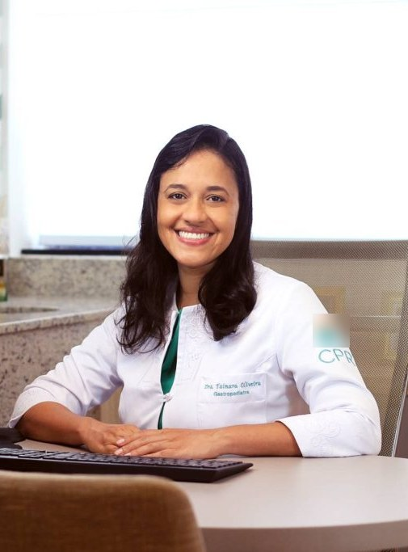

Início · Os pediatras · Dra. Tainara
Dra. Tainara Oliveira, pediatra.
Residência em Pediatria e em Gastroenterologia Pediátrica no HC (USP), título de especialista em Pediatria pela SBP e atuação em gastroenterologia e hepatologia pediátrica.
Formação
Pediatria e Gastroenterologia Pediátrica

A Dra. Tainara Queiroz Oliveira é pediatra, com registro no CRM da Bahia sob o número 22630 e os registros de qualificação de especialista RQE 14178 e RQE 14180.
- Residência em PediatriaHospital das Clínicas da USP, em Ribeirão Preto — residente de 2012 a 2014, na mesma turma do Dr. Renan (CNES).
- Residência em Gastroenterologia PediátricaHospital das Clínicas da USP (Doctoralia).
- Título de especialista em PediatriaSociedade Brasileira de Pediatria, 2016 (Doctoralia).
Fontes: perfil na Doctoralia · histórico profissional no CNES
Atuação
Gastroenterologia e hepatologia pediátrica
Na Doctoralia, a Dra. Tainara lista experiência em gastroenterologia pediátrica e em hepatologia pediátrica, e entre os temas que atende:
Veja a página de gastroenterologia e hepatologia pediátrica. A orientação é individual, definida em consulta.
Congresso
20º Congresso Brasileiro de Gastroenterologia e Hepatologia Pediátricas
Em junho de 2026, Salvador recebeu o congresso nacional da área, da Sociedade Brasileira de Pediatria. No programa oficial, a Dra. Tainara aparece na comissão local e como coordenadora de mesas-redondas:
- Mesa-redonda Doenças vasculares
- Mesa-redonda Atualização nas doenças metabólicas
Trajetória
Pediatria também no hospital universitário
Segundo o CNES, a Dra. Tainara atua como pediatra no Hospital Universitário Professor Edgard Santos (UFBA) desde 2017, além do consultório da CPRT.
Avaliações
14 opiniões na Doctoralia
“…extremamente competente, cuidadosa, segura, atualizada, mas acima de tudo HUMANA, sempre atenciosa e solicita com pais e pacientes.”Paciente anônimo · Doctoralia · há 9 anos
“Muito competente, informada e tem um jeito todo especial com as crianças.”Paciente anônimo · Doctoralia · há 9 anos
Dúvidas frequentes
Perguntas comuns
Como agendo com a Dra. Tainara?
Pelo WhatsApp da recepção, (71) 99991-0205, dizendo que prefere a consulta com ela e, se for o caso, o motivo (por exemplo, uma queixa de intestino).
Ela também faz consultas de rotina?
Sim. A Dra. Tainara é pediatra e a clínica oferece consultas em pediatria e puericultura.
Preciso de encaminhamento para a gastropediatria?
Não há essa exigência nas fontes da clínica. Confirme com a equipe ao agendar.
Agende
Uma consulta com calma, com tempo para as suas perguntas.
Consultório com hora marcada no Centro Médico Christian Barnard, sala 307, em Salvador. Fale com a recepção pelo WhatsApp (71) 99991-0205 e diga com quem prefere a consulta.